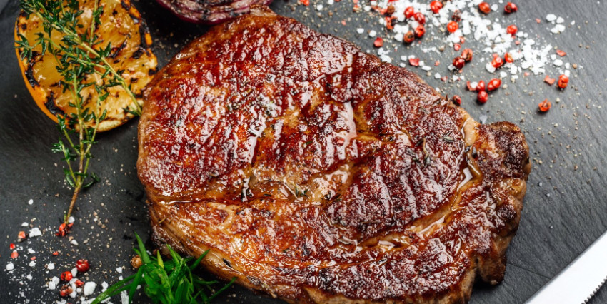

Return to Home
The perfect rumpsteak! 🥩

Description
As the name of the rumpsteak suggests, it comes from the backside of a cow, an area that's hard to work with.
Learn to cook your rumpsteak to the best of it's potential within this recipe!
Ingredients:
- 1 rump steak
- It should weigh around 500 grams
- It should measure around 5 centimeters in thickness
- Vegetable oil or groundnut oil
- Flaky Sea Salt
- Black Pepper
Food Preperation Steps:
- Remove the steaks from the fridge and allow them to come to room temperature at least an hour before you begin.
- Preheat the oven to 180°C/gas mark 4.
- Place a heavy-based frying pan or griddle pan over a high heat and add a splash of vegetable or groundnut oil.
Pat the steak dry with a paper towel and sprinkle both sides generously with flaky sea salt.
- When the pan is very hot, with the oil almost at smoking point, add the steak and cook for 3 minutes on each side.
- If there is a thick layer of fat on the outside, hold the steak with tongs, fat-side down, so it can brown for around a minute.
- Transfer the steak to a roasting tin and put it into the oven for 10–15 minutes.
- Remove the steak from the oven, season with pepper and rest on a warm plate, covered loosely with foil, for a further 10 minutes.
- Slice and serve with your choice of accompaniments.
Serving Suggestions
Chips are the classic accompaniment to a good steak and easier than you think to make at home, especially if you have a deep fat fryer.
Go all out with Tom Aikens’ Truffle chips or just follow his method even if you don’t fancy the luxury extras.
Spinach, wilted or creamed is another lovely steakhouse side or just keep things simple with a mustardy dressed green salad.
Finish off with a quick pan sauce or a tarragon-flecked Béarnaise.
Congratulations, you're done! Enjoy your steak!
Source Page Start Home